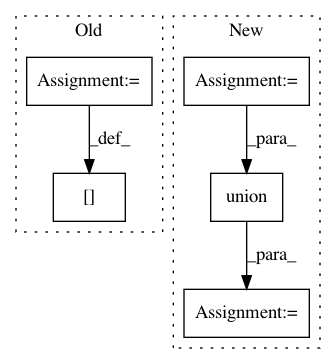

474a90c50a75b5dbffa6b018ebc0a3a26f689649,lib/matplotlib/tight_layout.py,,auto_adjust_subplotpars,#Any#Any#Any#Any#Any#Any#Any#Any#Any#Any#,19
Before Change
if all(not ax.get_visible() for ax in subplots):
continue
tight_bbox_raw = Bbox.union([
ax.get_tightbbox(renderer) for ax in subplots if ax.get_visible()])
tight_bbox = TransformedBbox(tight_bbox_raw,
fig.transFigure.inverted())
row1, col1 = divmod(num1, cols)
if num2 is None:
num2 = num1
row2, col2 = divmod(num2, cols)
for row_i in range(row1, row2 + 1):
hspaces[row_i, col1] += ax_bbox.xmin - tight_bbox.xmin // left
hspaces[row_i, col2 + 1] += tight_bbox.xmax - ax_bbox.xmax // right
for col_i in range(col1, col2 + 1):
vspaces[row1, col_i] += tight_bbox.ymax - ax_bbox.ymax // top
vspaces[row2 + 1, col_i] += ax_bbox.ymin - tight_bbox.ymin // bot.
fig_width_inch, fig_height_inch = fig.get_size_inches()
After Change
if all(not ax.get_visible() for ax in subplots):
continue
bb = []
for ax in subplots:
if ax.get_visible():
try:
bb += [ax.get_tightbbox(renderer, for_layout_only=True)]
except TypeError:
bb += [ax.get_tightbbox(renderer)]
tight_bbox_raw = Bbox.union(bb)
tight_bbox = TransformedBbox(tight_bbox_raw,
fig.transFigure.inverted())
row1, col1 = divmod(num1, cols)
In pattern: SUPERPATTERN
Frequency: 3
Non-data size: 5
Instances
Project Name: matplotlib/matplotlib
Commit Name: 474a90c50a75b5dbffa6b018ebc0a3a26f689649
Time: 2020-04-30
Author: jklymak@gmail.com
File Name: lib/matplotlib/tight_layout.py
Class Name:
Method Name: auto_adjust_subplotpars
Project Name: brian-team/brian2
Commit Name: ae51454c8dd6a76768d6a87589a80f75b1bfda49
Time: 2013-05-03
Author: marcel.stimberg@ens.fr
File Name: brian2/equations/equations.py
Class Name: Equations
Method Name: check_units
Project Name: J535D165/recordlinkage
Commit Name: f7a88a2d7e1c37bfba5e6f7dd72b8a75ae9fa50a
Time: 2018-02-25
Author: jonathandebruinhome@gmail.com
File Name: recordlinkage/base.py
Class Name: BaseCompare
Method Name: _compute